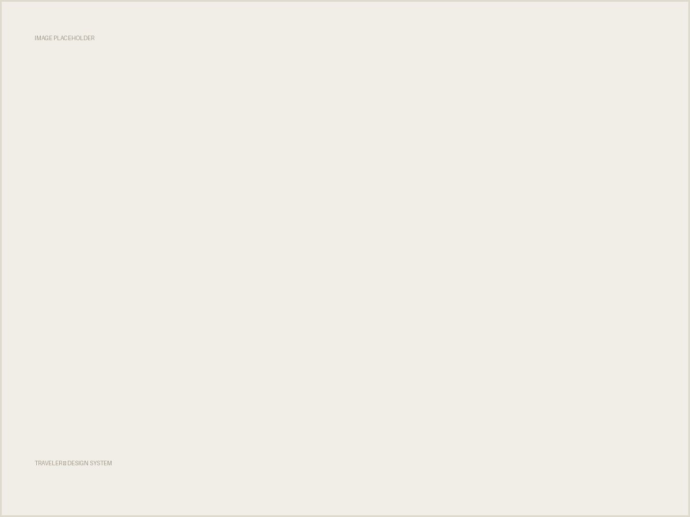
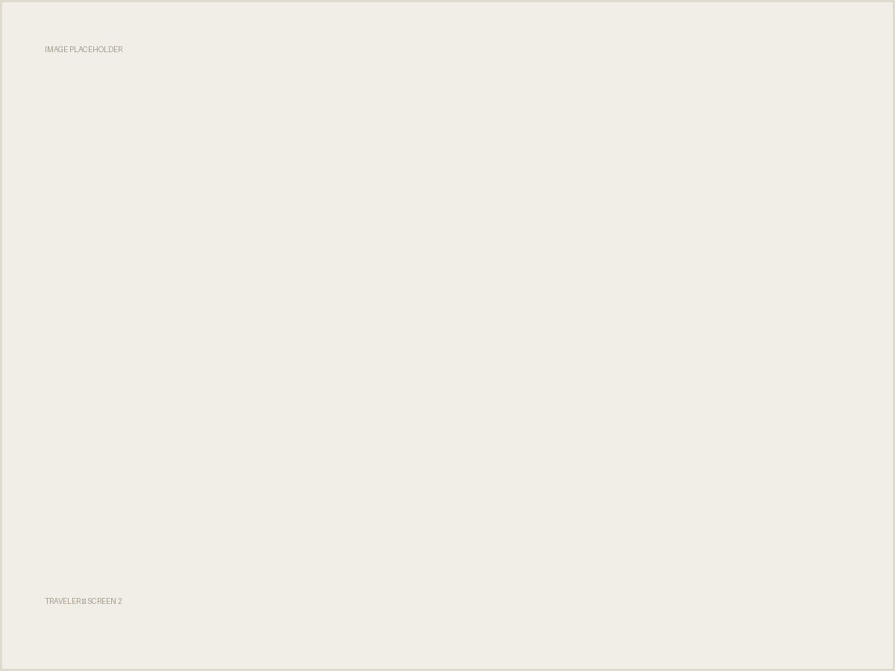
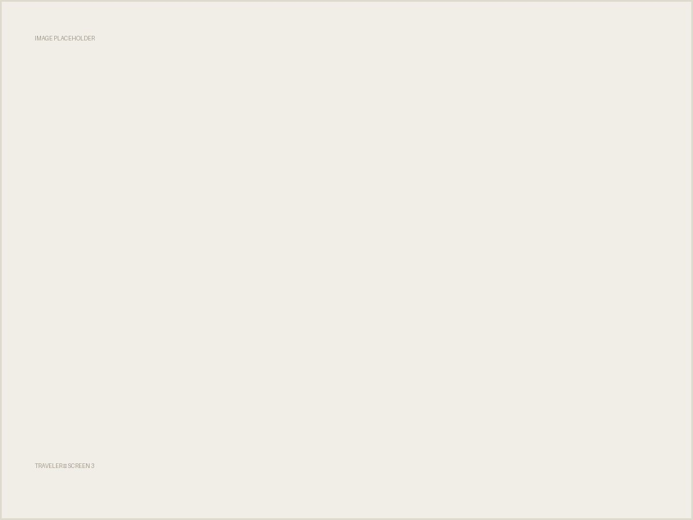

Vietnam Travel App
Traveler
클라이언트가 요청한 타이머 UI 대신, 서비스의 게임적 성격을 살리는 랭킹 기반 구조를 직접 제안해 방향을 바꾼 프로젝트입니다.
01
Overview
Traveler는 베트남을 여행하는 사용자를 위한 맞춤형 서비스입니다. 제휴처 탐색, 혜택 확인, 트래블 카드 혜택맵 등을 다루며, 여행이라는 소재가 가진 재미 요소를 UI에 어떻게 담을지가 핵심 과제였습니다.
02
Background
클라이언트는 제휴처 혜택을 확인하는 화면에 타이머 형식의 UI를 요청했습니다. 남은 시간을 보여주는 구조 자체는 명확했지만, 시간의 흐름만 보여주는 것으로는 여행 서비스가 가진 게임적 성격이 충분히 드러나지 않는다는 문제가 있었습니다.
03
Problem
타이머는 "혜택이 곧 사라진다"는 압박은 줄 수 있지만, 사용자가 더 탐색하고 더 참여하게 만드는 동기로는 약했습니다. 여행지·제휴처를 둘러보는 행위 자체를 재미있게 만들 구조가 필요했습니다.
04
Research
말로 대안을 설명하기보다, 순위 기반 구조로 바꾼 대안 시안을 직접 만들어 제시했습니다. 사용자가 여행지를 탐색하고 혜택을 저장할수록 순위가 올라가는 구조로, 같은 정보를 참여 동기로 바꿀 수 있는지 화면으로 검증했습니다.
05
Insight
타이머 중심 구조에서 랭킹 기반 구조로 방향을 바꾸는 근거를 시안으로 제시하고, 클라이언트를 설득했습니다. 결과물을 보여주는 방식이 말로 논의하는 것보다 방향을 더 빠르게 좁혔습니다.
06
Solution
홈 화면에 게임 요소를 적용하고, Ranking UI로 사용자 참여를 유도했습니다.
Ranking UI 설계
타이머 대신 순위 구조를 적용해, 사용자가 여행지·제휴처를 더 탐색하도록 동기를 부여했습니다.
제휴처 탐색 → 저장 → 혜택 확인 흐름 설계
탐색부터 저장, 혜택 확인까지 여행의 주요 경험을 직관적으로 구성했습니다.
디자인 시스템 구축
Pretendard 기반 타이포그래피와 컬러 시스템을 정의하고, Icon·Item·Navigation·Chip 등 공통 컴포넌트를 만들어 여러 화면에 일관되게 적용했습니다.
07
Design
탐색부터 저장, 혜택 확인까지 여행의 주요 경험을 직관적으로 구성했습니다.



08
Result
09
Reflection
클라이언트의 요청을 그대로 구현하는 것과, 요청의 목적을 파악해 더 나은 대안을 제시하는 것은 다른 일이라는 걸 확인한 프로젝트였습니다. 타이머냐 랭킹이냐를 말로 논쟁하지 않고 시안으로 보여준 것이 설득의 핵심이었습니다.